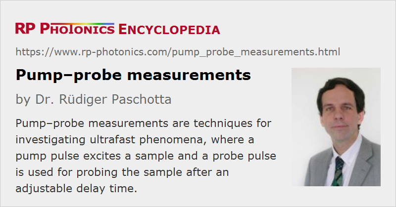

Pump–probe Measurements
Definition: techniques for investigating ultrafast phenomena, where a pump pulse excites a sample and a probe pulse is used for probing the sample after an adjustable delay time
German: Pump-Probe-Messungen
Categories: optical metrology, methods
How to cite the article; suggest additional literature
Author: Dr. Rüdiger Paschotta
Pump–probe measurements can be used to obtain information on ultrafast phenomena. The general principle is the following. A sample (e.g. a SESAM) is hit by some pump pulse, which generates some kind of excitation (or other modification) in the sample. After an adjustable time delay (controlled with an optical delay line), a probe pulse hits the sample, and its transmission or reflection is measured. By monitoring the probe signal as a function of the time delay, it is possible to obtain information on the decay of the generated excitation, or on other processes initiated by the pump pulses. The probe signal is typically averaged over many pulses, and a fast photodetector is not required. The temporal resolution is fundamentally limited only by the pulse duration of pump and probe pulses.
The wavelengths of pump and probe beam do not need to be identical. A so-called two-color pump–probe measurement, based on two synchronized sources of short pulses (e.g. a laser and an optical parametric oscillator, or two parametric oscillators pumped with the same laser) has additional capabilities in ultrafast laser spectroscopy. It is vital in such cases to ensure tight synchronization of the different laser sources with a very low relative timing jitter, as the jitter could otherwise spoil the attainable temporal resolution.
Pump–probe measurements can be used, for example, to monitor the recovery of a saturable absorber after its excitation, the speed of diffusion of photoexcited carriers, or the melting of a sample after being hit by an intense pulse.
Pump–probe methods are also used in various methods of time-resolved spectroscopy.
Suppliers
The RP Photonics Buyer's Guide contains 8 suppliers for pump--probe measurement equipment. Among them:
Questions and Comments from Users
Here you can submit questions and comments. As far as they get accepted by the author, they will appear above this paragraph together with the author’s answer. The author will decide on acceptance based on certain criteria. Essentially, the issue must be of sufficiently broad interest.
Please do not enter personal data here; we would otherwise delete it soon. (See also our privacy declaration.) If you wish to receive personal feedback or consultancy from the author, please contact him e.g. via e-mail.
By submitting the information, you give your consent to the potential publication of your inputs on our website according to our rules. (If you later retract your consent, we will delete those inputs.) As your inputs are first reviewed by the author, they may be published with some delay.
See also: time-resolved spectroscopy, ultrafast optics, saturable absorbers, semiconductor saturable absorber mirrors, optical sampling, synchronization of lasers, laser spectroscopy
and other articles in the categories optical metrology, methods
|  |
If you like this page, please share the link with your friends and colleagues, e.g. via social media:
These sharing buttons are implemented in a privacy-friendly way!